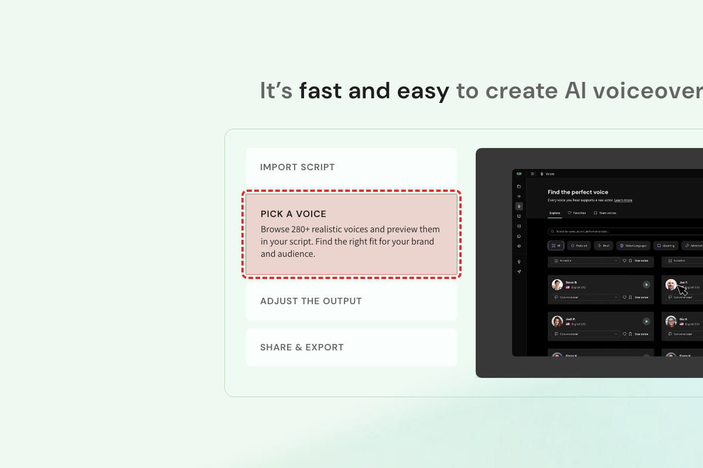

Prepared for WellSaid Labs
Prepared for WellSaid LabsThe number of available voices is stated two different ways on the same homepage: 120+ in two places, 280+ in another
Most Realistic AI Voice Generator | WellSaid · https://www.wellsaid.io/

Browse 280+ realistic voices and preview them in your script.
Pick one voice-count figure and use it consistently. The homepage says both '120+' (twice) and '280+' (once); the industry pages (financial-services, healthcare) also use '280+'. Confirm the correct current count and align every marketing page to the same number.
The homepage (grew ~17% this week) contradicts itself on the voice count. It says 'Choose from 120+ natural-sounding AI voices ... across accents, languages, and styles' and 'Pick from 120+ natural styles', but the 'PICK A VOICE' section says 'Browse 280+ realistic voices and preview them in your script.' Neither number is qualified as a subset (e.g. English-only), so a visitor can't tell whether there are 120 or 280 voices. The same '280+' boilerplate also appears on /industries/financial-services-voice-ai and /industries/voice-ai-healthcare, so the inconsistency is site-wide. Not present in the carried-forward finding set.